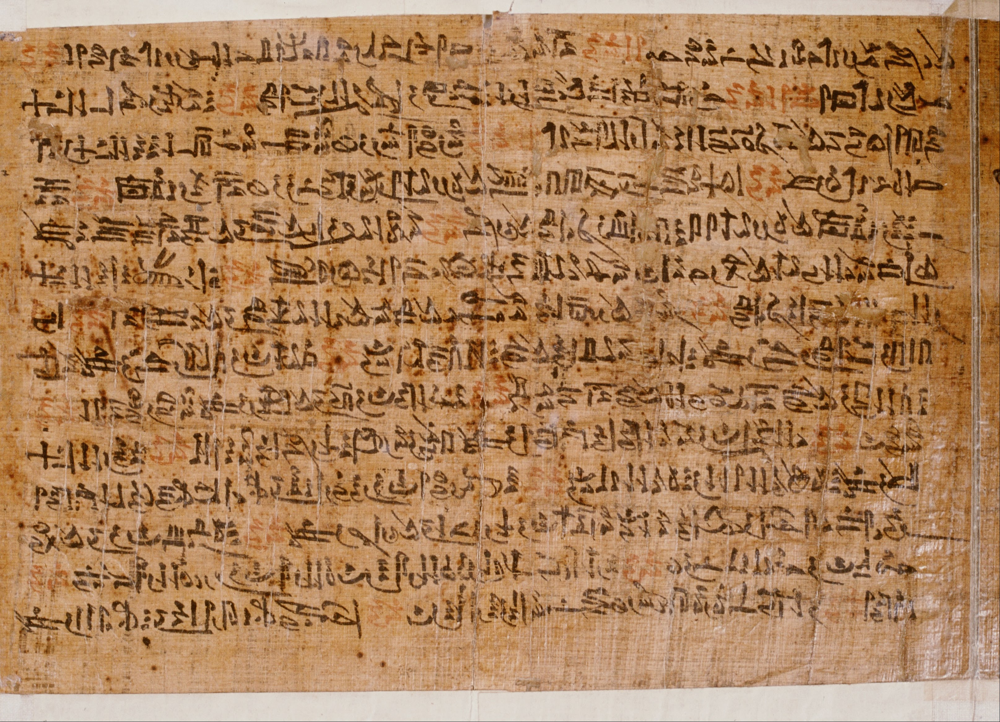

The 10 Plagues(מכת)are some of the biggest miracles in the Torah(תורה).They Include:
These Plagues are very easy to not believe.There is proof for all of these plagues.
The Ipuwer Papyrus(see picture below)is a papyrus written in ancient Eygptian.
When the Ipuwer Papyrus was translated it talked about drought,starvation,etc.
Subsequently the Ipuwer Papyrus was compared to the Torah and they were extremely similar.
The Ipuwer Papyrus states this:"Plague is throughout the land. Blood is everywhere."(2:5-6)
The Torah states this:"all the waters of the river were turned to blood.(7:20)
Another quote from the Ipuwer Papyrus is:"The river is blood. As you drink it you lose your humanity and thirst for water.(2:10)
Another quote from the Torah is:"Egypt will grow weary of trying to drink water from the river."(7:18)
Now when we compare the quotes from the Ipuwer Papyrus and from the Torah we see that they are the same thing but from different points of view.
This is proof for the plague of blood.
The next plague is frogs.
The Ipuwer Papyrus:"O that the earth would cease from the noise and tumult be no more"(6:1)
According to the Zohar(זהר) because of the loud noise from the frogs nobody can hear anybody and the babies and children died.(Vol 2,30)
This is proof for the plague of frogs.
The Ipuwer Papyrus states:"All animals,their hearts weep"(5:5)
The Torah states:"The hand of G-d is upon the cattle which is in the field...and there shall be a very grievious sickness"(9:3)
This is proof for the plague of Dead Animals
The Ipuwer Papyrus states:"Lower Egypt weeps...The entire palace is without its revenues.to it belong wheat and barley geese and fish"(10:3-6)
The Torah staes:"And the hail smote every herb of the field and broke every tree of the field"(9:25)
This is not only proof for the plague of hail but also the Torah says that the Jews lived in upper Egypt(גשן) and none of the plagues effected the land.
The Ipuwer Papyrus says:"The land is in darkness"(9:11)
The Torah says:"And there was a thick darkness in all the land of Egypt"(10:22)
This is proof for the plague of darkness.
The Ipuwer Papyrus says:"A man looks upon his son as his enemy(1:6)
According to the Midrash(מדרש) when the Egyptians were warned about the plague the firstborns told their fathers to free the Jews but they didnt.As a result the Egyptian firstborns killed their fathers by sword.
This is proof for the plague of death of the firstborns
The Ipuwer Papyrus states:"Gold and lapis lazuli,silver and malachite,carnelian and bronze...are fastened on the neck of female slaves"(3:2)
The Torah states:'Each women shall request from her neighbor and the lodger in her house objects of silver,gold,and clothing..."(3:22)
Again when we compare we see that its the same thing but from a different point of view.
This is proof for Exodus.
All of this is undeniable proof that the miracles listed above are prooven correct.
I hope this report helped you understand that nothing the Torah is untrue.